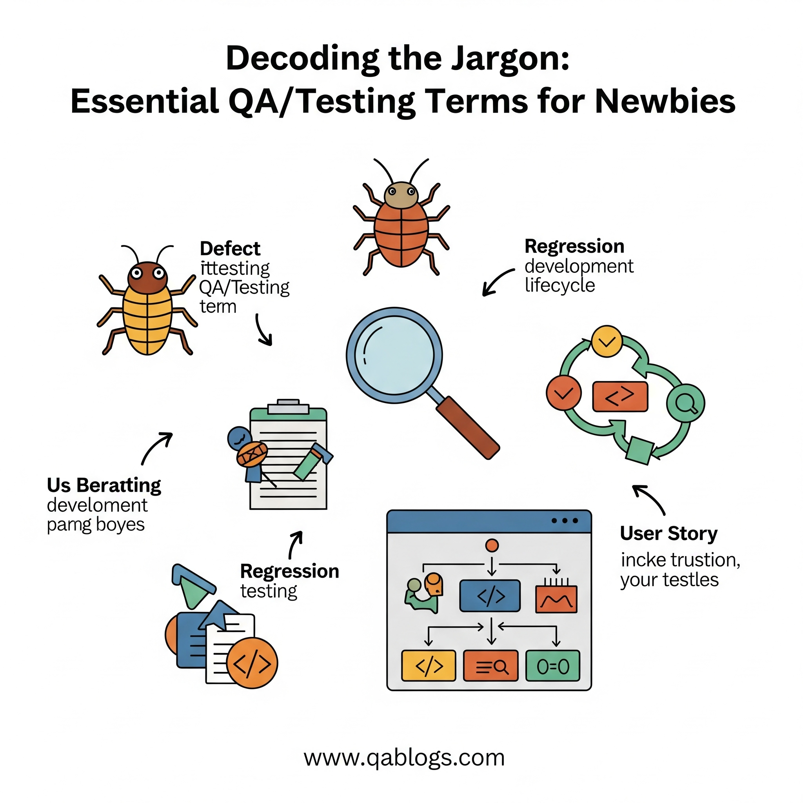

Decoding the Jargon: Essential QA/Testing Terms for Newbies

Starting a career in Quality Assurance (QA) and software testing can feel overwhelming, especially when you're bombarded with unfamiliar terms like "bug," "regression," or "UAT." As a beginner, understanding these terms is crucial for navigating conversations, documentation, and workflows in the fast-paced world of software development. This glossary-style blog on QA Blogs breaks down 10 fundamental QA/testing terms in a clear, concise way, empowering newbies to build confidence and contribute effectively. Whether you're joining a team in 2025 or just exploring QA, this guide is your starting point to mastering the jargon.
Why Understanding QA Terms is Good for Beginners
For new QA professionals, grasping essential terminology offers several benefits:
- Better Communication: You'll understand what your team means during meetings or when discussing test results, making collaboration smoother.
- Improved Documentation Skills: Knowing terms like "test case" or "test plan" helps you read and create accurate testing documents.
- Confidence in Learning: Familiarity with jargon reduces the intimidation factor, helping you focus on learning tools and processes.
- Career Growth: Speaking the language of QA fluently sets a strong foundation for advancing to roles like automation tester or test lead.
With the QA field evolving rapidly in 2025—think edge computing, privacy testing, and more—starting with the basics ensures you're ready to tackle modern challenges.
Essential QA/Testing Terms Glossary
Here's a beginner-friendly glossary of 10 key QA and testing terms, explained clearly with examples where helpful.
1. Bug
A bug is a flaw or error in the software that causes it to behave unexpectedly or incorrectly. It's something that doesn't match the expected outcome based on the requirements.
Example: If a login button on a website doesn't work when clicked, that's a bug.
Why It Matters: Identifying bugs is the core of QA—your job is to find them before users do!
2. Defect
A defect is similar to a bug but often refers to a deviation from the software's requirements or design specifications. Some teams use "bug" and "defect" interchangeably.
Example: If a shopping app's checkout page requires a 10-digit phone number but accepts 9 digits, that's a defect.
Why It Matters: Defects highlight gaps between what was designed and what was built, helping developers fix issues.
3. Test Case
A test case is a specific set of conditions, inputs, and expected outcomes designed to verify a particular feature or functionality of the software.
Example: For a login page, a test case might be: Input: Username "testuser," Password "pass123"; Expected Outcome: User logs in successfully.
Why It Matters: Test cases guide your testing process, ensuring you cover all scenarios systematically.
4. Test Plan
A test plan is a detailed document outlining the strategy, scope, resources, and schedule for testing a software project. It's like a roadmap for the testing phase.
Example: A test plan might specify that you'll test a mobile app's payment feature on Android and iOS devices over two weeks using specific tools.
Why It Matters: It keeps the team aligned on testing goals and ensures nothing is overlooked.
5. Regression Testing
Regression testing ensures that new changes or updates to the software haven't broken existing functionalities. You re-test previously working features after a code change.
Example: After fixing a bug in the checkout page, you re-test the login and payment features to ensure they still work.
Why It Matters: It prevents new updates from introducing unexpected issues, maintaining overall software stability.
6. Smoke Test
A smoke test is a quick, high-level test to check if the major features of the software work correctly. It's often done after a new build to ensure basic functionality before deeper testing.
Example: For a website, a smoke test might verify that the homepage loads, users can log in, and navigation links work.
Why It Matters: It acts as a "first pass" to catch critical issues early, saving time on detailed testing if the build is unstable.
7. Sanity Test
A sanity test is a focused test to verify that a specific fix or feature works as intended, without testing the entire system. It's narrower than a smoke test.
Example: If a developer fixes a bug in the login button, a sanity test checks just that button, not the whole login system.
Why It Matters: It ensures the fix works without spending time on unrelated areas, speeding up the testing cycle.
8. SDLC (Software Development Life Cycle)
The SDLC is the process used to design, develop, test, and deploy software. It includes phases like planning, design, development, testing, and maintenance.
Example: In the SDLC, QA starts testing after the development phase and continues through deployment.
Why It Matters: Understanding the SDLC helps you see where QA fits into the bigger picture and how your role impacts the project.
9. STLC (Software Testing Life Cycle)
The STLC is a subset of the SDLC, focusing specifically on the testing process. It includes stages like test planning, case development, execution, and reporting.
Example: In the STLC, you'd create a test plan, write test cases, execute them, and then report bugs to developers.
Why It Matters: It provides a structured approach to testing, ensuring thorough and organized quality checks.
10. UAT (User Acceptance Testing)
UAT is the final testing phase where end-users or clients test the software to ensure it meets their requirements and is ready for production.
Example: Before launching a banking app, real users test features like transferring money to confirm they work as expected.
Why It Matters: UAT ensures the software is user-ready, bridging the gap between technical testing and real-world use.
Tips for Beginners to Use These Terms Effectively
Now that you know these terms, here's how to apply them as a newbie:
- Practice in Conversations: Use terms like "test case" or "regression testing" during team meetings to build fluency.
- Read Documentation: Look for these terms in test plans or bug reports to understand their context.
- Ask Questions: If a term like "smoke test" confuses you in a discussion, don't hesitate to ask your team for clarification.
- Document Your Work: When writing test cases or reporting bugs, use these terms correctly to sound professional.
Why Start with These Terms?
These 10 terms form the foundation of QA and testing, covering the essentials you'll encounter daily. In 2025, as QA evolves with trends like edge computing and privacy testing, knowing the basics ensures you can confidently learn advanced concepts. For example, understanding "regression testing" prepares you to test updates in distributed edge systems, while knowing "UAT" helps you validate user-focused features in IoT apps.
FAQs for Beginners
Why do QA terms matter for newbies?
Understanding terms like "bug" or "test plan" helps you communicate effectively, read documentation, and contribute to your team with confidence.
What's the difference between a bug and a defect?
A bug is an error causing unexpected behavior, while a defect is a deviation from requirements. Many teams use the terms interchangeably.
How can I learn more QA terms?
Start with this glossary, read QA Blogs for more guides, and explore free resources like W3Schools or The Testing Academy on YouTube.
What's the difference between smoke and sanity testing?
Smoke testing checks major features to ensure a build is stable, while sanity testing focuses on verifying a specific fix or feature works correctly.
Conclusion
Mastering QA terminology is the first step to thriving in your testing career. This glossary of essential terms—like bug, test case, regression testing, and UAT—equips you to understand conversations, contribute to documentation, and grow as a QA professional. As the QA field advances in 2025, a solid grasp of these basics will set you up to tackle modern challenges with confidence. Start using these terms today, and you'll be speaking the language of QA like a pro in no time!
Ready to dive deeper into QA? Explore more beginner-friendly guides at QA Blogs and kickstart your testing journey!
Subscribe to QA Blogs
If you found this article helpful, don't forget to subscribe to QA Blogs for more insightful content on software testing, automation, and QA best practices. Together, let's build better software—one test at a time!
Nikunj Mistri
Founder, QA Blogs
About the Author